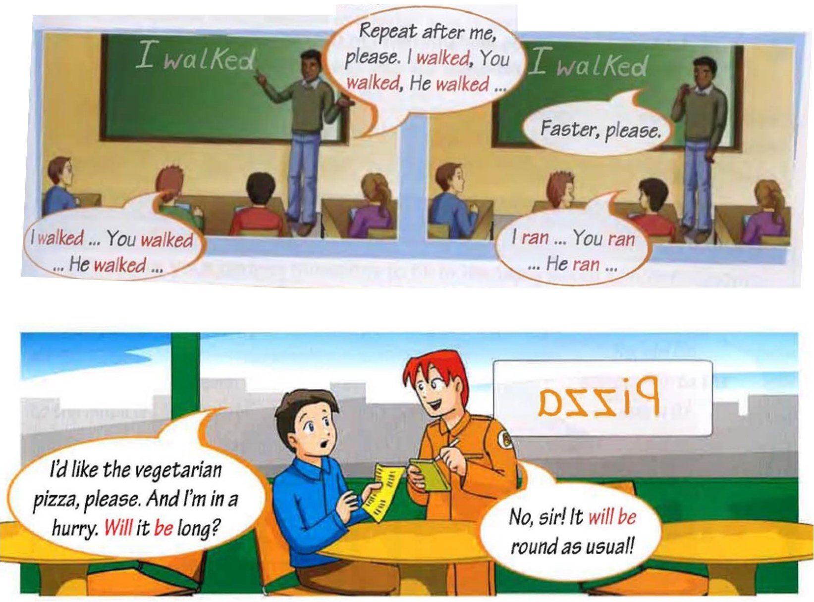

Шутки на занятии? Я «за»!
😁 Люблю юмор, люблю веселых, остроумных, позитивных людей.
Посмотрите на пост, это картинки из учебника Round-up. Согласитесь, такая иллюстрация оживляет объяснение новой темы )
В чем задача учителя / преподавателя / репетитора?
Давать качественные знания, скажете вы. Но как же важен настрой ученика или студента во время занятия!
Давящая атмосфера, назидательный тон, плохое настроение учителя, упреки и критика сведут на нет все попытки сеять разумное, доброе, вечное.
Скучное занятие идет во вред и самому преподавателю, пропадает желание учить. Кстати, самоирония учителю тоже не повредит.
Юмор снимает напряжение, позволяет разрядить обстановку. Помимо прочего, юмор мотивирует!
На уроки к такому преподавателю идешь с удовольствием!